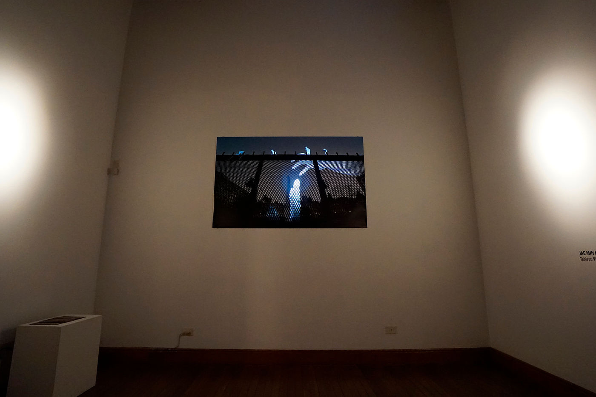
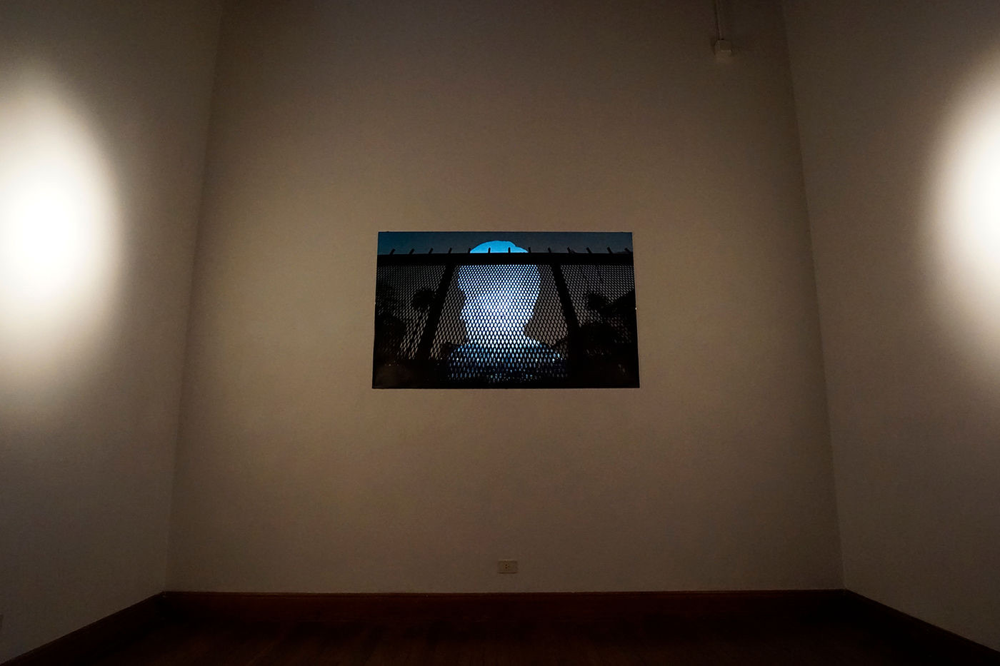

Media Art — 2016
Severance
철조망을 사이에 둔 두 개의 풍경 — 세계 어디에나 있는 단절의 보편적 이야기를 담은 두 폭의 연작.
Two landscapes divided by a barbed-wire fence — a diptych on the universal story of severance found everywhere in the world.
이 연작의 제목은 ‘단절(Severance)’입니다. 작업을 위해 중요한 장소로 아르헨티나의 5월 광장(Plaza de Mayo)을 선택했습니다. 그곳은 역사적이고 정치적이며 복합적인 무언가를 지닌 장소이지만, 저는 보편적인 이야기를 찾고자 했습니다. 그런 장소는 세계 어디에나 있기 때문입니다. Severance Ⅰ, Severance Ⅱ 두 장의 사진으로 이루어지며, 두 사진은 가운데 철조망을 두고 서로 다른 풍경 사이의 단절을 보여줍니다.
Tableau Vivant(‘살아있는 그림’) 연작 — 사진과 영상을 결합해, 거대한 사진 이미지 위에 프로젝션 매핑으로 새로운 생명을 부여하는 미디어 아트입니다.
This series’ title is ‘Severance.’ For an important site I chose the Plaza de Mayo in Argentina — a place both historical and political, yet I sought a universal story, since such places exist everywhere. It consists of two pictures, Severance Ⅰ and Severance Ⅱ, showing the severance between different sights with a barbed-wire fence in the middle. Part of the Tableau Vivant (‘living picture’) series — media art combining photography and video, giving a massive photographic image new life through projection mapping.
- 연작
- Series
- Tableau Vivant
ACE Políglota Gallery, Buenos Aires — 2016
